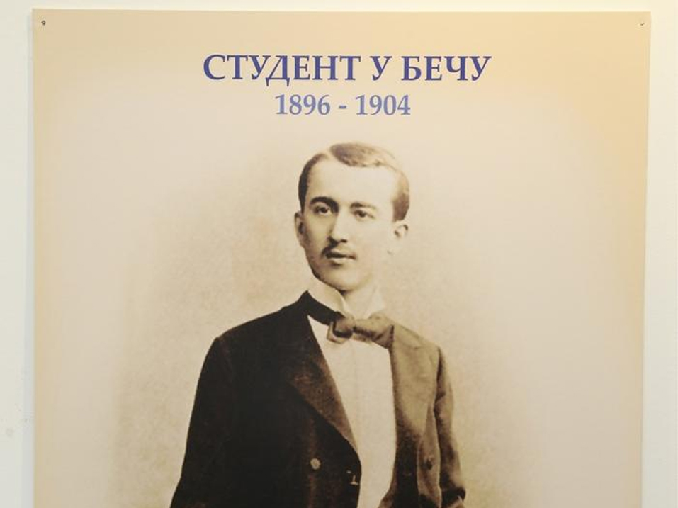
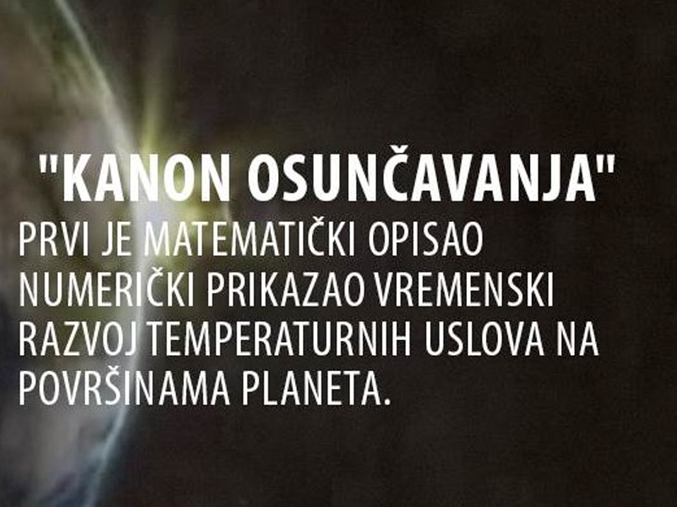
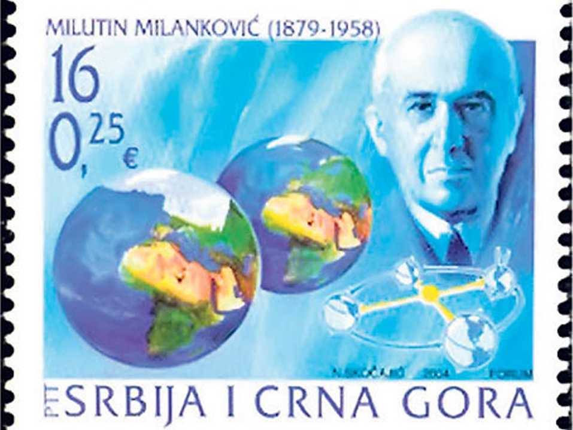
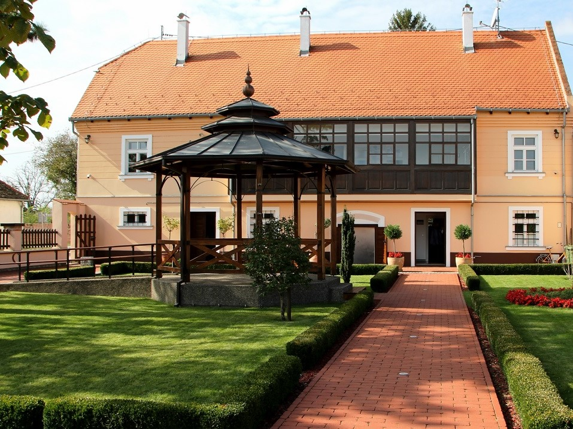
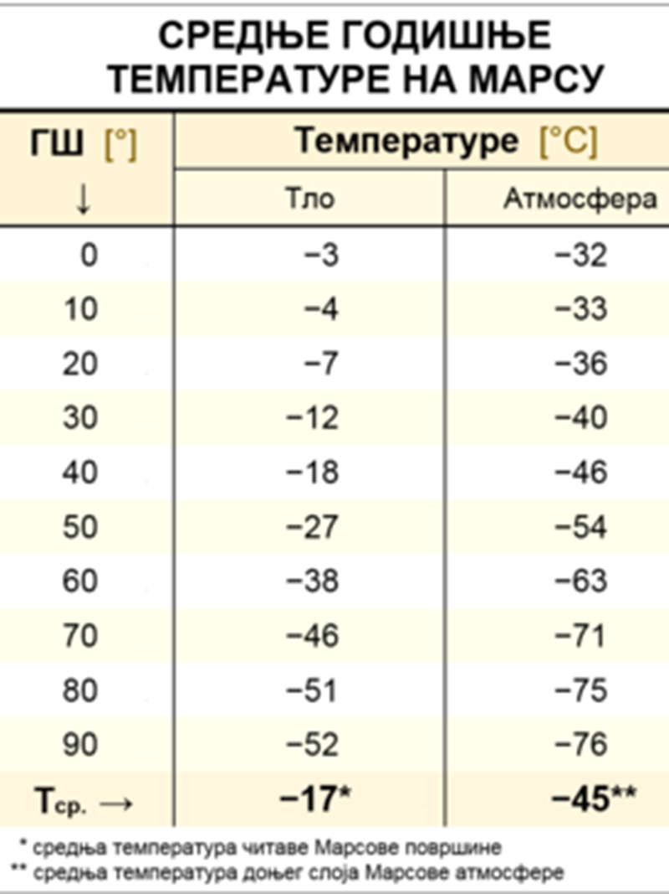
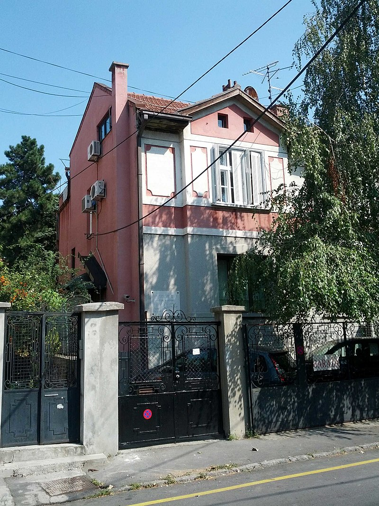

Milutin Milanković
Početna
Biografija
Radovi i otkrića
Kviz
Galerija
Kontakt
Galerija

Milutin Milanković studentski dani

Kanon osunčavanja

Poštanska markica iz 2004. godine

Rodna kuća u Dalju

Srednje godišnje temperature na Marsu

Kuća Milutina Milankovića
Bista Milutina Milankovića u Novom Sadu
Profesor Milutin Milanković 1924. godine